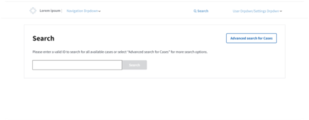

Overview
Problem
After reviewing a case, judges will submit an evaluation of the attorney's performance on the case. This evaluation is currently not available post-submission, which prevents judges and other authorized users from correcting or updating any feedback that might impact an attorney's pay and work opportunities.
Challenges faced
- Multiple stakeholders with conflicting opinions, all needed to be weighed somewhat equally.
- Working with a new development team that works a bit differently than other dev teams worked with in the past.
- Effort transitioning to another development team, which caused some confusion and delays in the development process
- High loads of information needed on a form that already had alot of input fields and sections. How would we keep the new layers of added information clear and easy to access without drowning out pre-existing fields and sections?
Timeline
March 2025-March 2026
Role
UX Designer
Solution breakdown
- Allow for decision evaluations to be revisted by judges and other authorized users through both existing and new pages in the application.
- Implement solutions used previously in another effort to prevent two users from editing the same evaluation at the same time.
- Allow for past evaluations to be viewed but not editable if it meets certain criteria, so as not to cause duplication of data.
Process
1. Mapping out the user flow
We approached the requirements gathering phase by meeting up with the stakeholders, getting a better understanding of the ask, and then exploring the existing functionality internally amongst ourselves. From there, we continued with our weekly cadence of stakeholder meetings to continue asking more questions and presenting initial wireframes until we were able to flesh both requirements and wireframes out enough. Common practice during this solutioning effort is creating a process flow deliverable, as seen below:

2. Entry points for Decision Evaluations
The entry points for the decision evaluations were established during several rounds of the stakeholder meetings. Originally, the main entry points were going to be siloed to the case details page of applicable cases as well as the search page, but after further internal discussion we proposed a new view on the judges queue to the stakeholders. This new view would allow judges to quickly access and see all decision evaluations that had been submitted just by them, organized by attorney name. These three starting points would all lead to the same decision evaluation page, with slight differences to account for as seen in the overall user flow below:

1. Case Details
Under more research, the entry point of the case details page was determined to not be the main entry point taken by judges or authorized users. However, stakeholder's original request did include having this entry point and it was requested to remain even after several presentations. It would still prove useful as an entry point in the use case where a judge would be reviewing multiple cases for the same veteran, for example. The case details page is also a page with heavy traffic, given the amount of crucial information displayed on it, so it could often be opened for judges and other users to have a reference. In reality, this is more of a sub entry point, given that it is mainly accessed by the other two entry points of the judge queue and the search page.


2. Judge Queue
Every user in the application has a personal queue, where they can see cases assigned to them in different statuses. This effort would provide a new view in a judge's queue, where they can see decision evaluations that they have submitted and are both still editable or have passed the editable date and are read-only. Each case would be organized by attorney name, as well as other filterable pieces of information such as different score types and the date the evaluation was submitted. A search bar would allow for searching by fields that are not already filterable in the queue table, such as fields with unique values. The ability to download the queue table as a CSV file would also be available. This new view would be the main entry point for judges, unless they need to look for cases that have been submitted by other judges. Although initally seen as a business need, this entry point was later deprioritized and deemed out of scope given that it wasn't captured in the original draft of business requirements.


3. Search Page
The search page enhancement was three-fold. Firstly, Decision Evaluations would be added in as a possible result when specific users search existing search criteria on the existing search page. These same users would be able to search for decision evaluations using new search criteria introduced in a second phase of this search effort. Lastly, a potential third phase was discussed with the business to introduce new search criteria for the other two existing types of results, cases and reviews.



Reflections
Unlike previous projects I had worked on, this project was handed off to three different development teams before it got properly worked on. The project was divided into two parts: Development team A would spearhead the case details entry point while development team B would take charge of the search page entry point. The entry point of the judges queue, although intially approved, was later deemed by stakeholders to be out of scope.
The initial development team that I had worked with did not properly document business requirements due to lack of frontend experience, so I and the leads of the different development teams had to work together on drafting business requirements. There were a few gaps missed during initial presentation of wireframes that had to be addressed during the UAT deployment in the development phase, but most of these gaps were linked to edge cases.
Otherwise, the development process went off without many issues and deployed succesfully to UAT. Still, this experience made me realize that I have to really work on documenting not just rare edge cases and work on addressing them sooner rather than later, but I also have to work on vocalizing concerns and questioning how efforts are written up, even if it falls out of range of my immediate work responsibilities.